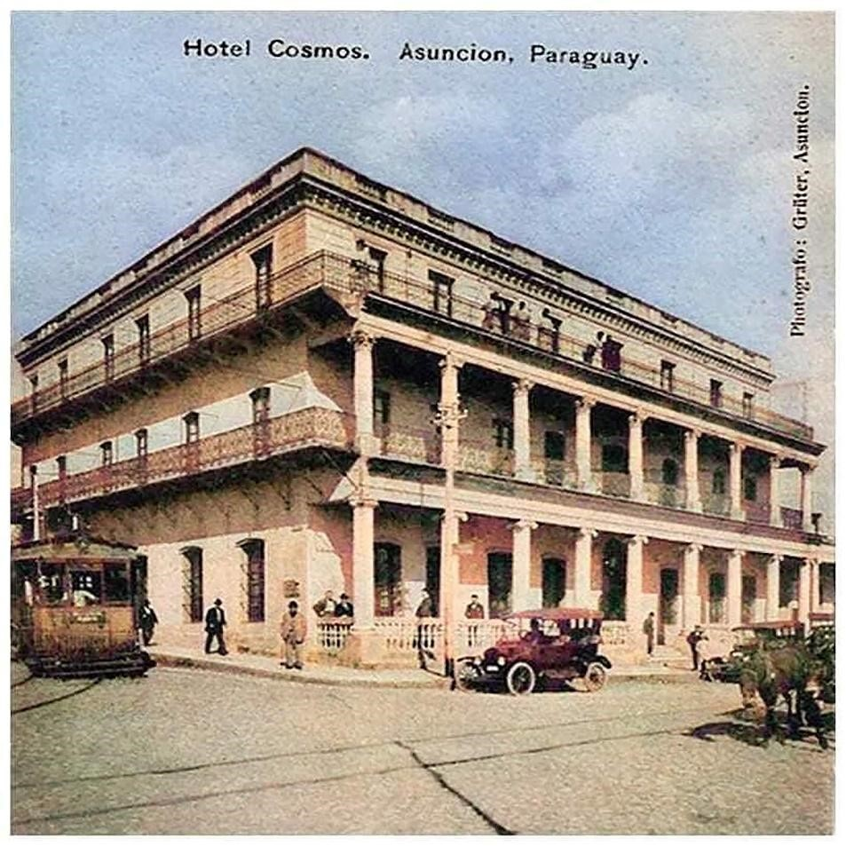

Aspectos Históricos
Venancio López Carrillo, nació en la ciudad de Asunción en los años 1828, hijo del Carlos Antonio López y Juana Carrillo, hermano de Francisco Solano López. Fue ministro de Guerra y Marina, y comandante militar de Asunción. Estuvo al lado de su hermano, el Mariscal, hasta que, en 1868, cayeron sobre él por una supuesta conspiración contra el presidente López. En primera instancia se le perdonó la Vida, pero lo mantuvieron preso e incomunicado. En octubre de 1869 fue acusado nuevamente, pero esta vez junto a su madre, hermanas y el coronel Hilario Marcó, una nueva conspiración para matar al Mariscal. Fue sometido a torturas, y en la Picada de Chiriguelo, a escasos kilómetros de llegar a Cerro Corá, fue encontrado muerto en febrero de 1870.
Este hermoso palacete construido en 1858, con proyecto del arquitecto italiano Alejandro Ravizza, perteneció a Venancio López, hijo de Don Carlos y hermano menor de Francisco Solano. Don Carlos Antonio López, presidente del Paraguay hasta su muerte en 1862, hizo construir palacios a cada hijo. Benigno, el menor, tenía uno en Palma y 14 de mayo que también fue reconvertido a hotel en la post guerra (1864-1870), Francisco Solano tuvo el suyo, lo que hoy es el Palacio de Gobierno y Venancio López tuvo este. También su hija, Juana Inocencia casada con el Gral. Barrios tuvo el suyo, aunque un poco más modesto que los de sus hermanos. El edificio en estudio, denominado históricamente Ex Palacete López Carrillo, es otra de las tantas obras del Arq. Alessandro Ravizza, de nacionalidad italiana, quien arribó al Paraguay en el año 1854. El mismo, fue uno de los arquitectos más renombrados del país en esa época, cuyos trabajos (Palacio de Gobierno, Palacio de Benigno López y otros.) bajo el gobierno del Presidente Don Carlos Antonio López y de Francisco Solano López, puso al Paraguay en el mapa histórico de la cultura edilicia mundial de esa época.
El edificio fue construido para la residencia de Venancio López Carrillo, y hacia el año 1858 fue Inaugurado. El mismo, como marino, trabajaba como Jefe de Aduanas y viajaba en los buques de la Marina para vigilar los movimientos comerciales, en especial la ruta Asunción, Buenos Aires (Argentina), Montevideo (Uruguay). También fue ministro de Guerra y Marina y Comandante militar de Asunción. En 1869, con la entrada de tropas brasileñas a Asunción, esta construcción se convirtió en el hospital de la marina. Al finalizar la Guerra contra la Triple Alianza (1864-1870), tras la retirada del Brasil, el edificio volvió a manos de los hijos de Venancio López, quienes lo vendieron. Posteriormente, pasó a ser propiedad del sector privado, primero, durante el resto del siglo XIX, fue el “Hotel Argentino”, luego fue el hotel Cosmos y a mediados del siglo XX, Hotel Colonial y finalmente Asunción Palace Hotel hasta la fecha.
En la década de los años 40 del Siglo XX, la viuda de Camihort vendió la propiedad al señor Eduardo Yubero quien fuera Administrador del Asunción Palace Hotel. Luego pasó a manos de su hija la Señora Malia Yubero de Sánchez. Cuenta Alicia Sánchez, nieta de Yubero, que cuando se inauguró la casa, a la música que se ejecutó se denominó por primera vez Polka. Una noche de enero de 1925, se estrenó en el hotel, unl nuevo género musical creado por el Maestro José Asunción Flores. En el Hotel Cosmos, estaba el Dr. Eligio Ayala, presidente del Paraguay, con un grupo de amigos, cuando la Orquesta de la Banda de la Policía inició la ejecución de Jejuí. El público entusiasmado hizo silencio y aplaudió la notable creación. ¿Quién es el autor? preguntó el Presidente Eligio Ayala. Le respondieron: “es uno de los músicos de la Policía, un soldadito de nombre José A. Flores”. Compartieron el escenario unos destacados músicos europeos, radicados en el país, que ejecutaron con la Banda la partitura de Jejuí. Ellos eran el violinista Alfred Kamprad, el pianista Alfred Brand, y Erik Piezunka, ejecutando el cello. El Doctor Ayala pidió bis. Ese día nació la verdadera música paraguaya, la que nos da identidad: La Guarania.
Descripción Formal Desde el punto de vista de la tecnología aplicada: Se impone en forma paulatina un nuevo patrón cultural que va dejando atrás la tradición colonial. Un patrón edilicio que se caracteriza como de transición hacia el Clasicismo y Eclecticismo. Se introducen materiales como el hierro utilizado en dinteles, bovedillas entre otros y algunos materiales importados (mármol).
Tipología Planta arquitectónica en L Descripción El edificio tipo palacete, se halla implantado en un terreno en esquina, entre linderos y sobre elevado con respecto a ambas arterias vehiculares. El acceso principal se encuentra sobre la Avenida Colón, y se accede al mismo a través de unos escalones, dando realce al edificio en sí. El estilo neoclásico se convierte en una decidida imitación de todo lo europeo, tanto en el aspecto técnico constructivo como en el aspecto decorativo, que es lo que se observa en la fachada principal sobre la avenida Cristóbal Colón (pilares de orden Jónico en planta baja del edificio y orden corinto en la planta alta). Para su construcción se han utilizado materiales propios de nuestro país, como ser: Cimientos de piedra bruta para cimientos traídos de Emboscada y Altos, mampostería revocada de ladrillos cerámicos de olerías públicas. Para las aberturas (puertas y ventanas) se utilizaron las buenas maderas de nuestro país, las puertas de madera fueron talladas por artesanos locales y las ventanas vidriadas se encuentran en buen estado de conservación. Se observa hierro forjado para las bovedillas catalanas. Entre los materiales importados se citan al mármol, utilizado en umbrales del acceso principal. La escalera que conduce a los pisos superiores, lleva barandas de hierro forjado y trabajado con decorado muy bonito, los pisos están conformados por mosaicos calcáreos. Observaciones: La edificación, marca una época de la historia durante el periodo presidencial de Don Carlos Antonio López. Este palacete, es quizás una de las obras del Arq. Ravizza, la cual, por su ubicación estratégica, la utilización de sus galerías exteriores en dos cuerpos (Jónicos y corintios) que le dio un carácter clasicista que, sin embargo, retomaba la tradición de corredores externos de la arquitectura colonial. Para nuevos usos, el edificio fue remodelado totalmente en su interior. En el año 2007, fue objeto de algunas intervenciones como ser: Modificación de la abertura en fachada principal, ampliación con un piso superior (tercer piso) cerramientos de algunos vanos, y otros.
Bibliografia Gutierrez Ramón Arq.-Evolución Urbanística y Arquitectónica del Paraguay 1537-1911. Ediciones Comuneros Año 1983 Asunción Paraguay. (Página consultada 223). www.bibliotecanacional.gov.py www.paraguay.com>especiales>un repaso a la arquitectura en 200 años de historia SANCHEZ QUELL, HIPOLITO / RUBIANI, JORGE Arq. "Asunción de los Recuerdos". Editorial Artemis. Asunción, 1984. Secretaria Nacional de Cultura. Dirección General de Patrimonio Cultural- Dirección de Registro de Patrimonio- Departamento de Registro de Patrimonio Cultural. Municipalidad de Asunción-Dirección General de Desarrollo Urbano-Dirección de Planeamiento U.-Departamento de Patrimonio Cultural. Enlaces: http://www.jma.gov.py/wp-content/uploads/2018/12/27-Asunci%C3%B3n-Palace-Hotel..pdf https://asuncionhotelpalace.com/espanol.html Vinculación con otras fichas Ficha Nacional de Identificación del Bien Cultural Inmueble-Dirección de Registro de Patrimonio-Dirección General de Patrimonio Cultural de la Secretaría Nacional de Cultura (SNC). Ficha de Inventario de edificios- Año 1990-Oficina Centro Histórico - Municipalidad de Asunción.
Equipo de trabajo Catalogador Arq. Mirtha Ibarra C. Colaboradores Arq. Msc. Clarisse Insfrán Echauri. Otros Colaboradores Func. Gustavo Barrios Func. Humberto Battioni Ente componente Dirección de Registro de Patrimonio Fecha recolección de datos 01/07/2018 Operador Clarisse Insfrán Fecha de registro 20/09/2019